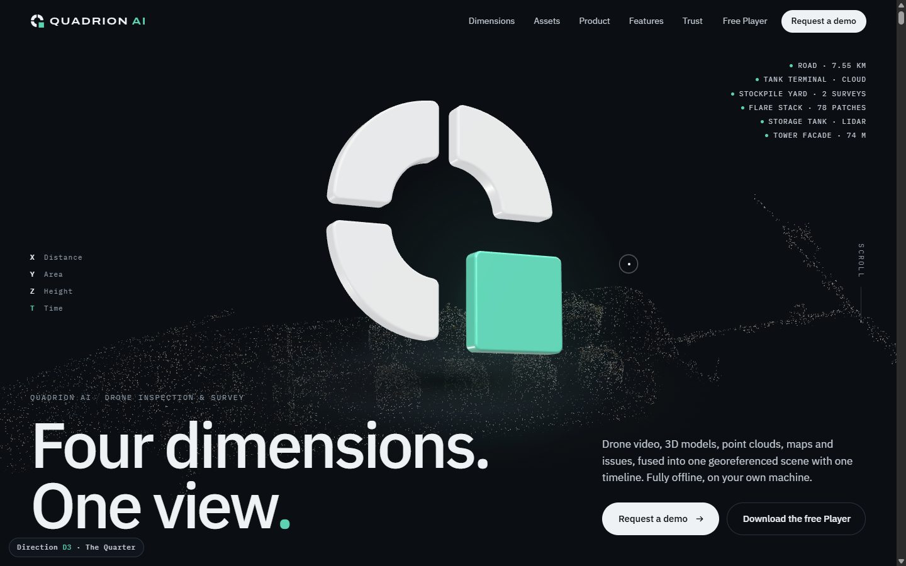
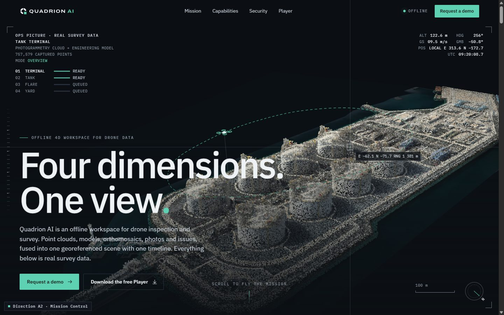
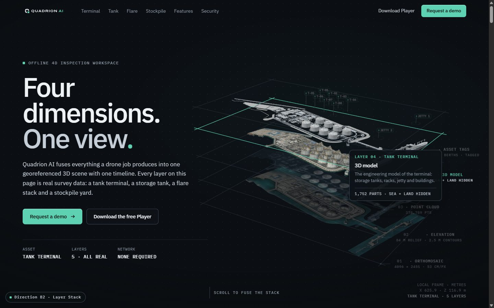
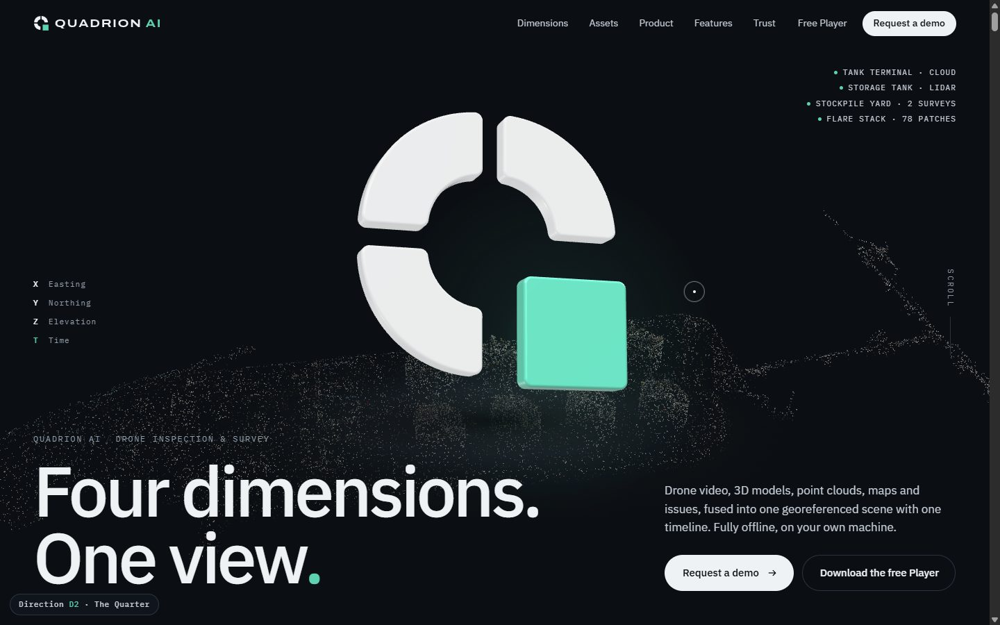
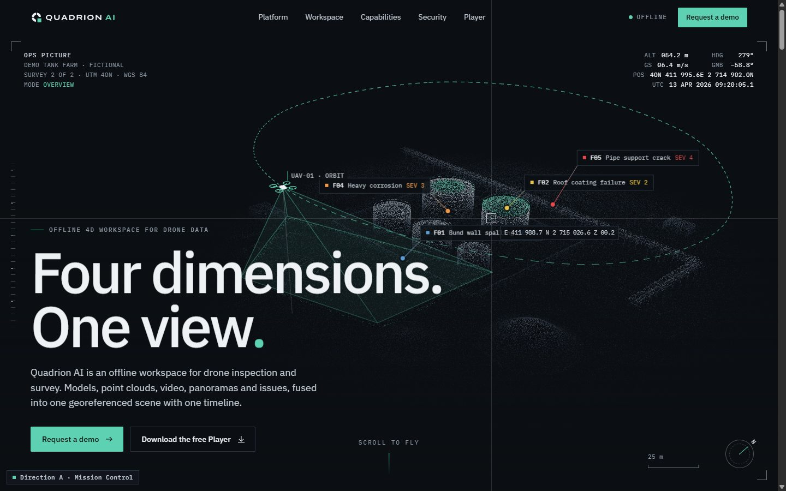
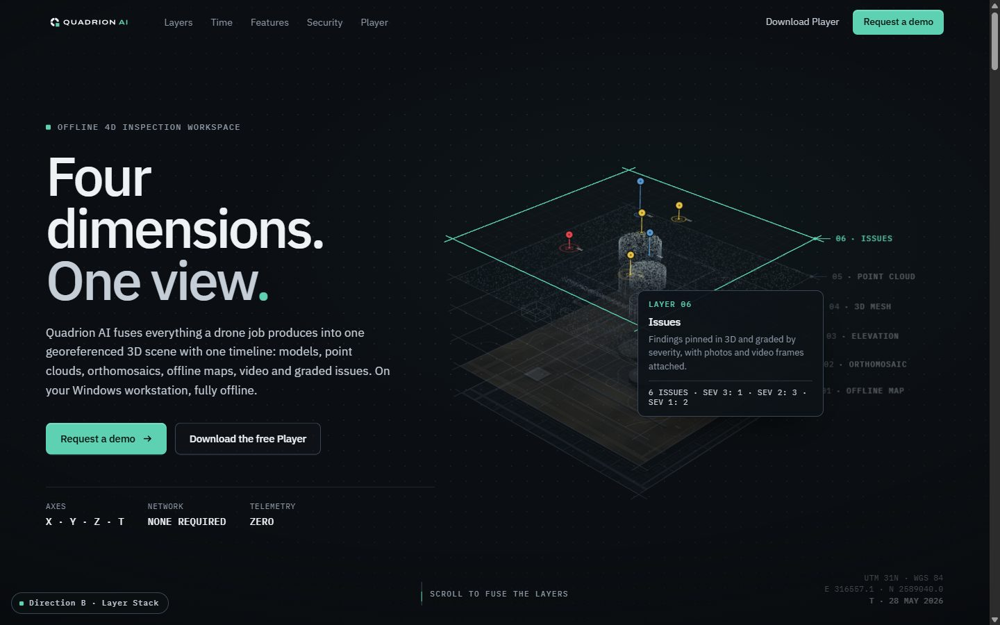
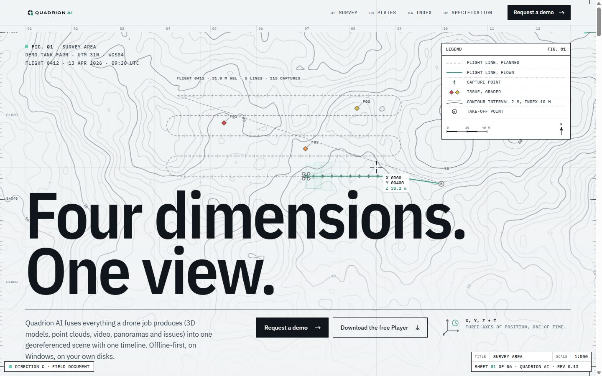
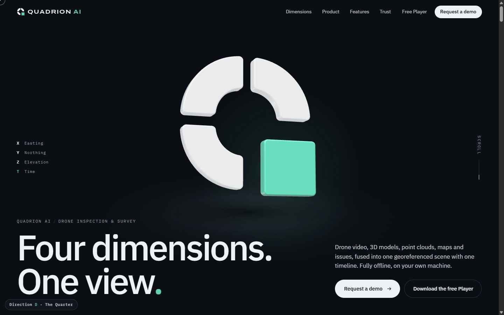

Website · Selected direction · The Quarter
Website · Selected direction · The Quarter
The Quarter.
Six real assets.
Round 2 develops A, B and D on real survey data: a tank terminal point cloud, a storage tank LiDAR scan, an 80 m flare stack with mapped corrosion, and a stockpile yard surveyed twice. Each page moves from asset to asset with its own transitions. Scroll slowly.
No video and no client or site names. These are local prototypes; anything published later needs each client to sign off. Round 1 is archived below.

Open D3 ↗The Quarter · D3
CurrentThe selected direction, refined. The four dimensions each get the asset that shows them best: X is the 7.55 km road, Y the terminal, Z the flare and the tower facade, T the stockpile. The tank interior is a fifth chapter. Each asset enters with a transition cut from the mark.
- New
- Road flight with PCI scan and defect close-ups. Tower facade with class-by-class reveal and an RGB / thermal wipe. Tour index, six-asset app window, road and facade chapters.
- Previous
- D2 stays live at /d2-quarter/ for comparison.

Open prototype ↗Mission Control
A2One continuous scroll mission. The camera flies from the terminal cloud into the tank, up the flare and over the stockpile, and a single 120k-particle system morphs between real assets.
- Transitions
- Curl lift-off and slice dive into the tank. Helix and scanline resolve with corrosion ignition on the flare. Dissolve and rain onto the yard, then the survey wipe. Finally all four gather into the live app.
- Keeps
- HUD telemetry, crosshair coordinates, leader callouts, spec-sheet rows.

Open prototype ↗Layer Stack
B2Every asset is its own exploded stack of real layers. The terminal stack fuses, shatters and re-forms as the tank, which separates ring by ring. The flare splits into mesh, corrosion and photo layers, and the stockpile surveys stack in time.
- Transitions
- A different handover between each pair of assets, with spring physics and raycast hover on every real layer.
- Keeps
- Fuse-on-scroll, leader labels, tilt and spotlight bento (now with real imagery).

Open prototype ↗The Quarter
D2The 3D mark becomes a portal. Each quarter is a live window onto one real asset, the mint square flies you into the scenes, and the tour is cut with masks taken from the mark itself.
- Transitions
- Quarter-ring iris into the tank, a vertical rise up the flare, the mint-square time wipe across the stockpile, then a live app window.
- Keeps
- Sculpted 3D mark, X/Y/Z/T split, kinetic type, horizontal chapters.
Shared data layer
All three use the same real datasets through data/quadrion-data.js, which loads and samples the terminal, tank, flare and stockpile, so any direction can borrow another's scenes.

Open prototype ↗Mission Control
AAn operations picture you fly through. A point-cloud site with a live drone flight, leader-line callouts and instrument-grade HUD telemetry. Scrolling flies the camera through Capture, Fuse, Inspect and Compare.
- Mood
- Defence-grade, calm, technical. Anduril / Palantir / flight instruments.
- Palette
- Signature
- Scroll-driven camera flight on a WebGL point cloud, a cursor crosshair with coordinates, spec-sheet rows with a scanline on hover.
- Fit
- Matches app UI 1:1O&G / gov trustCan feel cold

Open prototype ↗Layer Stack
BThe product idea, made literal. Six exploded data layers (map, ortho, contours, mesh, cloud, issues) fuse into one plane as you scroll. Time then extends them into dated slabs, and the stack becomes the real app.
- Mood
- Premium product storytelling at Linear / Stripe level of craft, grounded in geospatial data.
- Palette
- Signature
- Raycast hover on 3D layers, a fuse-on-scroll moment, tilt and spotlight bento tiles with micro-animations.
- Fit
- Explains "fusion" instantlyBroad appealFamiliar SaaS rhythm

Open prototype ↗Field Document
CA light, editorial site set like a survey drawing. It has a parallax topographic contour map, huge condensed type, figure plates, a drawing-sheet title block and a crosshair cursor. Ink-line animations measure stockpiles as you scroll.
- Mood
- Swiss editorial, cartographic, engineered. Stands out against every dark AI site.
- Palette
- Signature
- Multi-depth contour parallax, SVG line drawings that draw themselves, loupe-zoom screenshot plates.
- Fit
- Most distinctiveSpeaks to engineersApp is dark-first

Open prototype ↗The Quarter
DA cinematic, keynote-style launch. The Quadrion mark becomes a sculpted 3D object. Its four pieces split into X, Y, Z and T, then the mint square wipes the screen to reveal the app tilting into place.
- Mood
- Apple-style launch: sculptural, confident, lots of negative space.
- Palette
- Signature
- 3D extruded logo with studio lighting, mint wipe transition, word-by-word scroll highlight, horizontal feature chapters.
- Fit
- Strong brand recallLaunch-readyLess product-first